The Canvas class provides a number of methods for drawing things on the canvas. These methods are used to draw pixels, lines, rectangles, circles, ellipses, arcs, Bézier curves, triangles, and text.
The set_pixel method sets the color of a single pixel on the canvas.
set_pixel(160, 90, 10) # in palette mode
set_pixel(160, 90, 0, 255, 0) # in RGB mode
To read the color of a pixel, use the get_pixel method.
color = get_pixel(160, 90)
Depending on the color mode, the get_pixel method returns either a palette index or an array of RGB values.
The set_color method sets the color that will be used by all subsequent drawing operations.
set_color(10)
You can omit the color argument in the set_pixel method if you have previously set the color using the set_color method.
set_color(10)
set_pixel(160, 90)
Use the draw_line method to draw a line between two points.
set_color(10)
draw_line(10, 10, 100, 50)
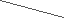
Use the draw_rect and fill_rect methods to draw rectangles. Specify the coordinates of the upper-left corner and the lower-right corner of the rectangle.
set_color(3)
fill_rect(10, 10, 100, 50)
set_color(10)
draw_rect(10, 10, 100, 50)
Use the draw_circle and fill_circle methods to draw circles. Specify the center and the radius of the circle.
set_color(3)
fill_circle(160, 90, 50)
set_color(10)
draw_circle(160, 90, 50)
Use the draw_ellipse and fill_ellipse methods to draw ellipses. Specify the center, the horizontal radius, and the vertical radius of the ellipse.
set_color(3)
fill_ellipse(160, 90, 50, 30)
set_color(10)
draw_ellipse(160, 90, 50, 30)
Use the draw_arc and fill_arc methods to draw arcs. Specify the center, the radius, the start angle, and the end angle of the arc.
set_color(3)
fill_arc(160, 90, 50, 0, 180)
set_color(10)
draw_arc(160, 90, 50, 0, 180)
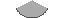
Use the draw_quadratic_bezier and draw_cubic_bezier methods to draw quadratic and cubic Bézier curves, respectively.
set_color(10)
draw_quadratic_bezier(10, 10, 50, 50, 100, 10)
draw_cubic_bezier(10, 10, 50, 50, 100, 50, 150, 10)
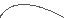
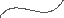
Use the draw_triangle and fill_triangle methods to draw triangles. Specify the coordinates of the three vertices of the triangle.
set_color(3)
fill_triangle(10, 10, 100, 50, 50, 100)
set_color(10)
draw_triangle(10, 10, 100, 50, 50, 100)
The flood_fill method fills an area of the canvas with the current color. Specify the starting point of the fill operation.
set_color(10)
draw_circle(110, 90, 50)
draw_circle(210, 90, 40)
flood_fill(160, 90)
Use the draw_text method to draw text on the canvas. Specify the position, the text to draw, the font name, and the scale factor.
set_color(10)
draw_text(10, 10, "Hello, world!", "4x6", 2)
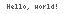
Use text_width to get the width and height of a given text string in pixels.
width = text_width("Hello, world!", "4x6", 2)
There are several built-in fonts available:
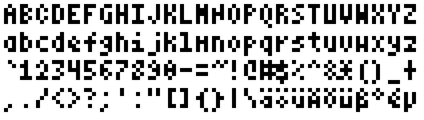
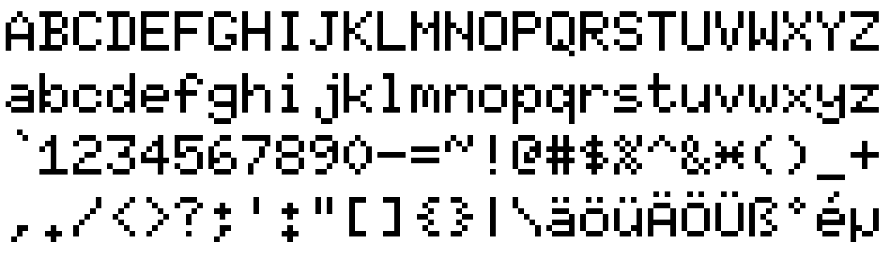
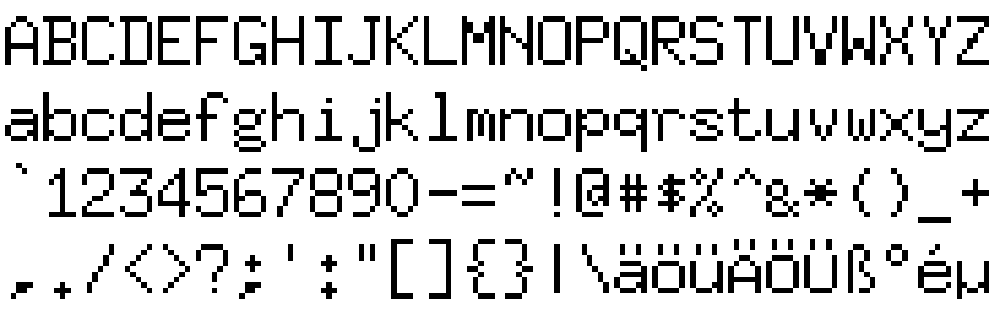
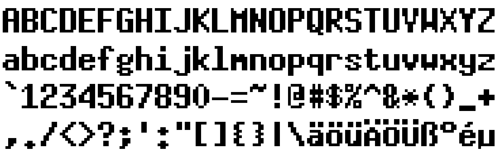
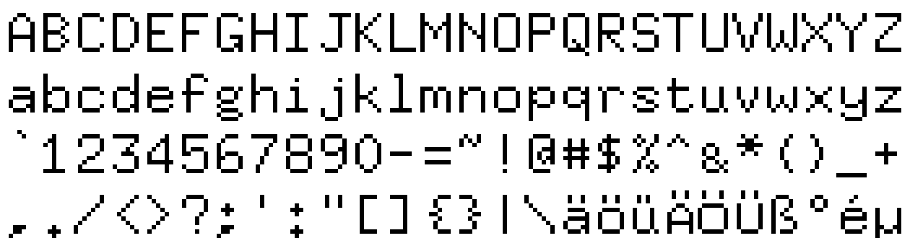
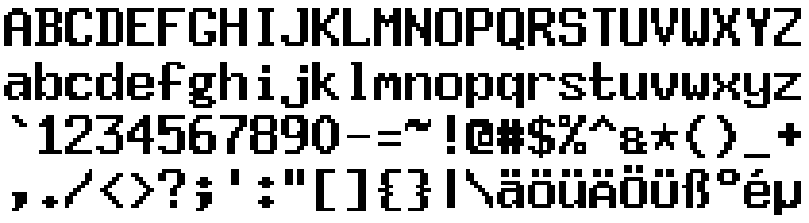
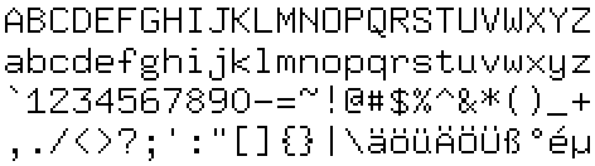
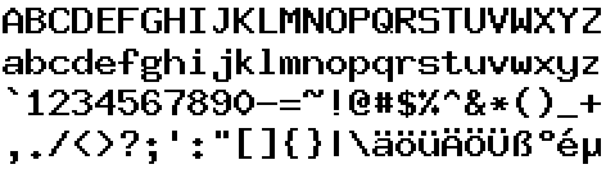